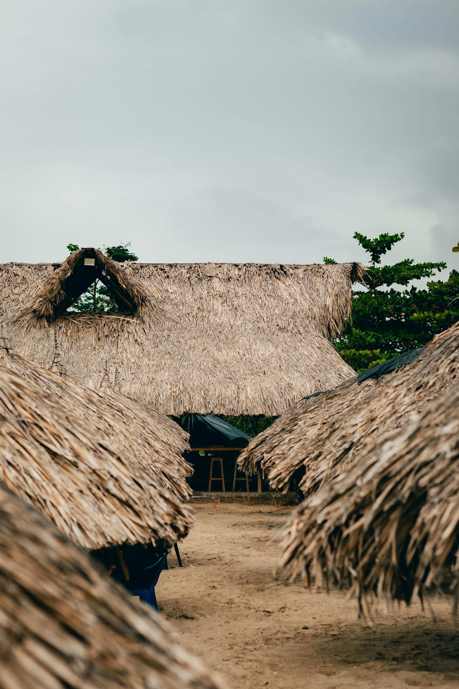

Gorgona es una isla oceánica ubicada a 28 km al oeste de la costa del Pacífico colombiano. Con Malpelo son las únicas islas de Colombia en el océano Pacífico. Gorgona tiene una longitud de 9 km por 2.5 km de anchura, con una extensión de unos 13 km² [1][2] aproximadamente de superficie terrestre o insular y 61 687,5 hectáreas (616,9 km²) de área marina.